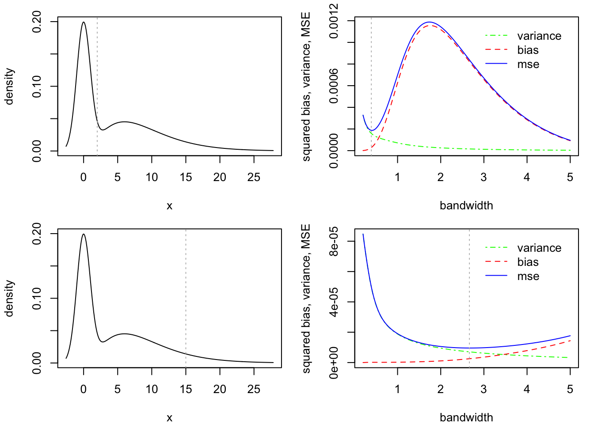

We now wish to analyze the estimation properties of kernel density estimators (KDEs). In particular, we will establish upper bounds on the variance and on the magnitude of the bias of the KDE \(\hat f_{n,h}(x)\) from Definition 1.1 at any fixed point \(x \in \mathbb{R}\). Ultimately we are interested in combinin our bounds on the variance and bias into a bound on the mean squared error \[
\operatorname{MSE}\hat f_{n,h}(x) = |\mathbb{E}\hat f_{n,h}(x) - f(x)|^2 + \mathbb{V}\hat f_n(x)
\] of the estimator \(\hat f_{n,h}(x)\) at the point \(x \in \mathbb{R}\), where the first term is the squared bias and the second term is the variance. We will closely follow Chapter 1 of Tsybakov (2008).
It is far simpler to bound the variance of \(\hat f_{n,h}(x)\) than to bound its bias. We will find that this is generally the case in nonparametric estimation; the reason for this is that the bias will depend on smoothness properties of the unknown functions we are trying to estimate, whereas the variance will not. So we begin with the variance.
Throughout we will assume \(X_1,\dots,X_n\) are independent realizations of a random variable \(X \sim f\).
Proposition 2.1 (KDE variance bound) Suppose \(f(x) \leq f_{\max} < \infty\) for all \(x \in \mathbb{R}\) and let \(\hat f_{n,h}(x)\) be a KDE with kernel \(K\) satisfying \(\int_\mathbb{R}K^2(u)du \leq \kappa^2 < \infty\). Then for any \(x \in \mathbb{R}\) we have \[
\mathbb{V}\hat f_{n,h}(x) \leq \frac{1}{nh}\kappa^2 f_\max.
\]
For a point \(x \in \mathbb{R}\) we have \[\begin{align*}
\mathbb{V}K\Big(\frac{X_1 - x}{h}\Big) &= \mathbb{E}K^2\Big(\frac{X_1 - x}{h}\Big) - \Big[\mathbb{E}K\Big(\frac{X_1 - x}{h}\Big)\Big]^2 \\
& \leq \mathbb{E}K^2\Big(\frac{X_1 - x}{h}\Big) \\
& = \int_\mathbb{R}K^2\Big(\frac{t - x}{h}\Big) f(t)dt \\
& \leq f_\max \int_\mathbb{R}K^2\Big(\frac{t - x}{h}\Big) dt \\
& \leq h f_\max \int_\mathbb{R}K^2(u) du \quad \text{ sub } u = (t - x)/h\\
& \leq h f_\max \kappa^2.
\end{align*}\] From here we write \[\begin{align*}
\mathbb{V}\hat f_{n,h}(x) &= \frac{1}{(nh)^2}\sum_{i=1}^n \mathbb{V}K\Big(\frac{X_i - x}{h}\Big)\\
&\leq \frac{1}{(nh)^2}\sum_{i=1}^n h f_\max \kappa^2\\
&= \frac{1}{nh}\kappa^2 f_\max.
\end{align*}\]
Proposition 2.1 tells us that as long as \(nh \to \infty\), the variance of \(\hat f_n(x)\) will go to zero; there is really only one condition, which is that the density \(f\) be finite at the point \(x\). Note that the constant \(\kappa^2\) simply comes from the choice of the kernel.
As already alluded to, we find that the bias depends on the “smoothness” of the density \(f\). To understand what is meant by this, we note that, provided \(\int_\mathbb{R}K(u)du = 1\), we can (in a few steps) re-write the bias of \(\hat f_{n,h}(x)\) for any \(x \in \mathbb{R}\) as \[
\mathbb{E}\hat f_{n,h}(x) - f(x) = \int_\mathbb{R}K(u) [f(x + uh) - f(x)] du.
\tag{2.1}\]
We may write \[\begin{align*}
\mathbb{E}\hat f_{n,h}(x) - f(x) &= \frac{1}{nh}\sum_{i=1}^n \mathbb{E}K\Big(\frac{X_i - x}{h}\Big) - f(x) \\
&=\frac{1}{h} \mathbb{E}K\Big(\frac{X_1 - x}{h}\Big) - f(x) \\
&=\frac{1}{h} \int_\mathbb{R}K\Big(\frac{t - x}{h}\Big)f(t)dt - f(x) \\
&=\int_\mathbb{R}K(u)f(x + uh)dt - f(x) \quad \text{ sub } u = (t-x)/h\\
&=\int_\mathbb{R}K(u)[f(x + uh) - f(x)]dt,
\end{align*}\] where the last equality comes from \(\int_\mathbb{R}K(u)du = 1\).
Now, suppose \(K\) places most of its mass close to zero so that \(K(u)\) vanishes for large \(u\) and suppose \(h>0\) is small. Then from Equation 2.1 we can see that if the density \(f\) is allowed to change by a large amount from the point \(x\) to the nearby point \(x + uh\), the bias will be large; on the other hand, if the density may change by only a small amount from \(x\) to the nearby \(x + uh\), the bias will be small.
The simplest way to limit the amount by which the function \(f\) may change within a small neighborhood of a point \(x\) is to place it in the class of Lipschitz functions, which we now define.
Definition 2.1 (Lipschitz condition) Let \(T\) be an interval in \(\mathbb{R}\). A function \(f\) satisfies the Lipschitz condition with Lipschitz constant \(L \geq 0\) on \(T\) if \[
|f(x) - f(x')| \leq L |x - x'| \quad \text{ for all }\quad x,x' \in T.
\]
Denote by \(\text{Lipschitz}(L,\mathbb{R})\) the collection of all functions satisfying the Lipschitz condition with Lipschitz constant \(L\) on \(\mathbb{R}\). Then for \(f \in \text{Lipschitz}(L,\mathbb{R})\) we may write \[
|f(x + uh) - f(x)| \leq L |uh|,
\] for all \(x \in \mathbb{R}\). This allows us to obtain the bias bound in the next result.
Proposition 2.2 (KDE bias bound for a Lipschitz density) Suppose \(\int_\mathbb{R}K(u)du = 1\) and \(\int_\mathbb{R}|u| |K(u)| du \leq \kappa_1 < \infty\). Then if \(f\in\text{Lipschitz}(L,\mathbb{R})\) we have \[
|\mathbb{E}\hat f_{n,h}(x) - f(x) | \leq h L\kappa_1
\] for all \(x \in \mathbb{R}\).
Starting from Equation 2.1, we write \[\begin{align*}
|\mathbb{E}\hat f_{n,h}(x) - f(x) | &\leq \int_\mathbb{R}K(u) |f(x + uh) - f(x)| du \\
&\leq \int_\mathbb{R}|K(u)| L|uh| du \\
&=hL \int_\mathbb{R}|u||K(u)|du\\
& \leq h L \kappa_1.
\end{align*}\]
Proposition 2.2 tells us that the bias must decrease as the bandwidth decreases. The value \(\kappa_1\) can be computed directly from the kernel \(K\), whereas the Lipschitz constant \(L\) is unknown; we can understand, however, that smaller values of \(L\), which correspond to functions which are not allowed to change by much within small neighborhoods, lead to a smaller bias bound. On the other hand, larger values of \(L\) allow greater changes in the density within small neighborhoods, leading to potentially larger bias.
Combining the variance bound in Proposition 2.1 and the bias bound in Proposition 2.2 gives the mean squared error bound in the next result. The mean squared error bound gives insight into how one should choose the bandwidth \(h\).
Proposition 2.3 (MSE of KDE under Lipschitz smoothness) Under the conditions of Proposition 2.1 and Proposition 2.2, we have \[
\operatorname{MSE}\hat f_{n,h}(x) \leq h^2L^2\kappa_1^2 + \frac{1}{nh} \kappa^2 f_\max
\tag{2.2}\] for all \(x\in \mathbb{R}\) with \(\operatorname{MSE}\)-optimal bandwidth \(h\) given by \(h_\operatorname{opt} = c^*n^{-1/3}\) such that \[
\operatorname{MSE}\hat f_{n,h_{\operatorname{opt}}}(x) \leq C^*n^{-2/3},
\] for all \(x \in \mathbb{R}\), where \(c^* > 0\) and \(C^*> 0\) are constants depending on \(f_\max\), \(L\), \(\kappa^2\), and \(\kappa_1^2\).
In the above, \(\hat f_{n,h_{\operatorname{opt}}}\) denotes the KDE under the MSE-optimal choice of bandwidth \(h\).
The bound in Equation 2.2 follows immediately from Proposition 2.1 and Proposition 2.2. To find the MSE-optimal choice of the bandwidth, we minimize the right side of Equation 2.2 in \(h\). Setting \[
\frac{d}{dh}(h^2L^2\kappa_1^2 + \frac{1}{nh} \kappa^2 f_\max) = 2hL^2\kappa_1^2 - \frac{1}{nh^2}\kappa^2 f_\max=0
\] and solving for \(h\) gives \[
h = n^{-1/3}\Big(\frac{\kappa^2f_\max }{2L^2\kappa_1^2}\Big)^{1/3}.
\] Plugging this back into Equation 2.2 gives the bound \[
\operatorname{MSE}\hat f_{n,h_{\operatorname{opt}}}(x) \leq n^{-2/3}\Big[ \Big( \frac{ \kappa^2f_\max }{2L^2\kappa_1^2}\Big)^{2/3}L^2\kappa^2_1 + \Big( \frac{2L^2\kappa_1^2}{\kappa^2f_\max }\Big)^{1/3}\kappa^2 f_\max \Big],
\] completing the proof.
Equation 2.2 exhibits the bias-variance trade-off entailed in the choice of the bandwidth \(h\). Small \(h\) leads to small bias but large variance; large \(h\) leads to small variance but large bias. One way of defining an optimal bandwidth is as the bandwidth corresponding to the smallest bound on the MSE, which we may call the MSE-optimal bandwidth, say \(h_{\operatorname{opt}}\). Proposition 2.3 shows that a Lipschitz density can be estimated at any point with MSE going to zero at the rate \(O(n^{-2/3})\) if the bandwidth is chosen as \(h_{\operatorname{opt}}\sim n^{-1/3}\) as \(n \to \infty\).
The simulation output in Figure 2.1 illustrates the bias-variance trade-off. The figure also shows us that the optimal bandwidth can depend on \(x\), so the MSE bound in Equation 2.2, which holds for all \(x\), does not tell the whole story. From the figure it appears that where \(f\) is smoother (less steep, less curvy), larger bandwidths may be optimal, whereas where \(f\) is less smooth (steeper, curvier), smaller bandwidths may be optimal.
Code
# define the true density functionf <-function(x) dgamma(x,3,scale =3) *1/2+dnorm(x) *1/2# choose values of x at which to estimate the densityx0 <-c(2,15)# define a function to compute the KDE at a point xkde <-function(x,Y,h,K = dnorm) mean(K((Y-x)/h)) / h# run simulationn <-200S <-100hh <-seq(0.2,5, length=151)kde_hh <-array(0,dim =c(S,length(hh),length(x0)))for(s in1:S){# draw a sample from a distribution with density f d <-sample(c(0,1),n,replace=TRUE) Y <- d *rgamma(n,3,scale =3) + (1- d) *rnorm(n)# obtain KDEs of f(x0) across sequence of bandwidths for(j in1:length(hh))for(k in1:length(x0)){ kde_hh[s,j,k] <-kde(x = x0[k], Y = Y, h = hh[j], K = dnorm) }}par(mfrow=c(length(x0),2), mar =c(4,4.1,1.2,1.1))for(k in1:length(x0)){ min <-qnorm(.005) max <-qgamma(.995,3,scale =3) x <-seq(min,max,length =300)plot(f(x) ~ x, type ="l",xlab ="x",ylab ="density")abline(v = x0[k], lty =3, col ="gray") v <-apply(kde_hh[,,k],2,var) b2 <- (apply(kde_hh[,,k],2,mean) -f(x0[k]))^2 mse <- b2 + v# locate hopt (find the dip) hopt <- hh[min(which(diff(mse) >0))]plot(v~hh,type ="l", ylim =range(v,b2,mse),xlab ="bandwidth",ylab ="squared bias, variance, MSE",col ="green", lty =4)lines(b2~hh, col ="red", lty =2)lines(mse~hh, col ="blue")abline(v = hopt, lty =3, col ="gray") xpos <-grconvertX(.6, from ="nfc", to ="user") ypos <-grconvertY(.9, from ="nfc", to ="user")legend(x = xpos,y = ypos,legend =c("variance","bias","mse"),col =c("green","red","blue"),lty =c(4,2,1),bty ="n")}

Figure 2.1: Squared bias, variance, and MSE of kernel density estimator at two choices of \(x \in \mathbb{R}\). Right panels show true density with vertical line at point \(x\) at which \(f(x)\) is to be estimated. Right panels show the squared bias (red dashed), variance (green dot-dashed), and mean squared error (blue solid) of \(\hat f_{n,h}(x)\) over a sequence of bandwidth values \(h\). Vertical dotted lines indicate the optimal bandwidth.
Tsybakov, Alexandre B. 2008. Introduction to Nonparametric Estimation. Springer Science & Business Media.